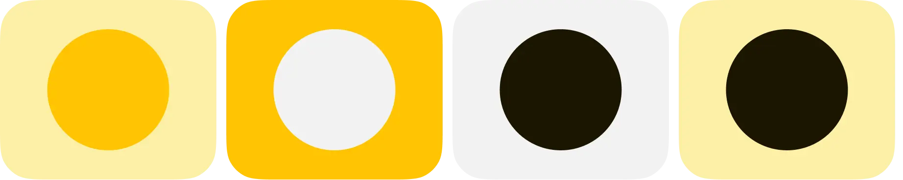
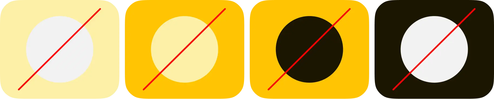

О Secret Sause
Кто мы?
Аня и Маша.Сами любим следить за тем, что делают большие бренды и хотим делиться с миром
А что такое Secret Sause?
Источник вдохновения для тех, чьи идеи меняют среду. То, что соединяет все ингредиенты блюда и делает его х2 вкуснее
Цвета
Цветовая палитра состоит из четырех цветов: Нежный карамельный соус, послевкусие от соуса, обожженный сахар и отсутствие вкуса
Основной цвет — карамель, которая иногда высветляется для того чтобы обожженный сахар, оттенял сладость. Для фона используем Lack of flavour
Одобряемые сочетания
А такое осуждаем (!)
Лого и монограмма
Наш логотип — состоит из монограммы и названия, они могут работать как вместе так и отдельно. Полный вариант логотипа лучше использовать для официальных документации и крупных носителей.
Монограмма это буква «S» , которая символизирует две заглавные буквы названия «secret sauce». Она используется чаще всего для диджитальных носителей или каких-то мелких фоматах.

Монограмма это буква «S» , которая символизирует две заглавные буквы названия «secret sauce». Она используется чаще всего для диджитальных носителей или каких-то мелких фоматах.
Наш логотип — состоит из монограммы и названия, они могут работать как вместе так и отдельно. Полный вариант логотипа лучше использовать для официальных документации и крупных носителей.

Не одобряем
Наш логотип — буква «S» , которая символизирует две заглавные буквы названия «secret sauce».
Такой вариант логотипа лучше использовать для официальных документов.
Типографика
Типографика, является главным элементом айдентики. Акцидентный шрифт Secret Sauce, работает в качестве графических элементов. А за наборный выступает Non Bureau
Шрифт Non Bureau работает как в заголовке, так и в основным тексте. Для дисрипшена используются прописные буквы, а наборный текст остаётся в классическом варианте

Сетка
Типографика, является главным элементом айдентики. Акцидентный шрифт Secret Sauce, работает в качестве графических элементов. А за наборный выступает Non Bureau
Шрифт Non Bureau работает как в заголовке, так и в основным тексте. Для дисрипшена используются прописные буквы, а наборный текст остаётся в классическом варианте

Типографика, является главным элементом айдентики. Акцидентный шрифт Secret Sauce, работает в качестве графических элементов. А за наборный выступает Non Bureau
Шрифт Non Bureau работает как в заголовке, так и в основным тексте. Для дисрипшена используются прописные буквы, а наборный текст остаётся в классическом варианте

Графика
Основным элементом графики является кастомный шрифт Secret Sauce, буквы увеличиваются до неечитаемости и превращаются в соус
Для дополненности графики используются внутренние тени (Inner shadow) белого цвета, а затем накладывается эффект Plus darker, который используется только на светлом фоне

В состав графики входит заголовок или Заглавная буква, заголовка.
Увеличиваем слова, так чтобы получался эффект графики соуса
Иллюстрации
Типографика, является главным элементом айдентики. Акцидентный шрифт Secret Sauce, работает в качестве графических элементов. А за наборный выступает Non Bureau
Шрифт Non Bureau работает как в заголовке, так и в основным тексте. Для дисрипшена используются прописные буквы, а наборный текст остаётся в классическом варианте

Для обычных форм используется более мягкий эффект высветления по краям
Такой эффект может применяться на кнопках, карточках, форме, в состояние наведения на объект и тд.
Фотостиль
Использование 12 колонок в вебе, аналогичное композиции в газетах, предоставляет удобную и гибкую сетку для размещения контента.
Эта концепция основана на традиционной газетной вёрстке, где информация структурируется в виде столбцов для легкости восприятия и управления вниманием читателя